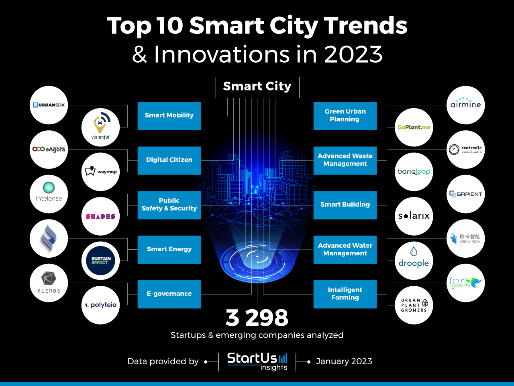

Smart Civic Reporting Made Easy
Report issues, track progress, and help build a smarter community
Smart City Innovation

Leading Smart City Trends
Discover the latest innovations in smart city technology, from IoT sensors to AI-powered governance systems.
Proven Results
Since our launch, Civic Eye has facilitated over 10,000 civic reports across 50+ communities, resulting in a 40% faster resolution time for municipal issues. Our platform has helped local governments save over $2M in operational costs while improving citizen satisfaction scores by 65%.
From pothole repairs to park maintenance and traffic signal updates, we're making cities more responsive and communities more connected through the power of technology.
Platform Features
AI Image Detection
Advanced computer vision automatically classifies civic issues from photos
Smart Location Services
Precise geo-tagging and mapping for efficient issue resolution
Fake Report Detection
ML algorithms prevent spam and duplicate submissions
Real-time Analytics
Track progress and view comprehensive issue statistics